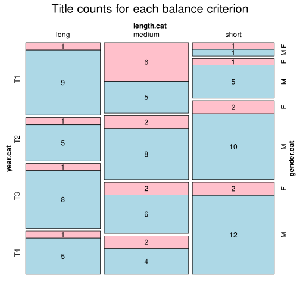

Click on a column heading to sort. Click on a text identifier to read the text (may not work in older browsers).
| Identifier | Encoding | Pages | Words | (Size) | Date (Slot) | Title | Author | Sex | Reprints |
|---|---|---|---|---|---|---|---|---|---|
| SPA1001 |
eltec-1 | 424 | 111968 | (long) | 1844 (T1) | El Señor de Bembibre | Gil y Carrasco, Enrique (1815-1846) | M | high |
| SPA1002 |
eltec-1 | 87 | 59587 | (medium) | 1852 (T1) | Conquista del Perú | Alonso de la Avecilla, Pablo (1810-1860) | M | low |
| SPA1003 |
eltec-1 | 710 | 123524 | (long) | 1855 (T1) | El testamento de Don Juan I | Arróriz y Bosch, Teresa (1827-1890) | F | low |
| SPA1004 |
eltec-1 | 325 | 95541 | (medium) | 1844 (T1) | Vida de Pedro Saputo | Foz, Braulio (1791-1865) | M | low |
| SPA1005 |
eltec-1 | 635 | 98583 | (medium) | 1852 (T1) | Clemencia. Novela de costumbres | Caballero, Fernán (1796-1877) | F | high |
| SPA1006 |
eltec-1 | 318 | 102498 | (long) | 1855 (T1) | El honor castellano. Novela histórica original | Amado Salazar, José María | M | low |
| SPA1007 |
eltec-1 | 368 | 54494 | (medium) | 1859 (T1) | La hija del mar | Castro, Rosalía de (1837-1885) | F | high |
| SPA1008 |
eltec-1 | 224585 | (long) | 1856 (T1) | Los templarios. Tomo I | Mora, Juan de Dios (1827-1884) | M | low | |
| SPA1009 |
eltec-1 | 15435 | (short) | 1840 (T1) | El diablo las carga | Ros de Olano, Antonio (1808-1886) | M | low | |
| SPA1010 |
eltec-1 | 132018 | (long) | 1856 (T1) | Anatomía del corazón | Guerrero, Teodoro (1824-1904) | M | low | |
| SPA1011 |
eltec-1 | 162427 | (long) | 1852 (T1) | Don Juan I de Castilla o La Venganza de un Rey | Domínguez, P. J. | M | low | |
| SPA1016 |
eltec-1 | 327 | 77452 | (medium) | 1857 (T1) | La infanta Doña Teresa | Torrijos, Manuel (1835-1865) | M | low |
| SPA1021 |
eltec-1 | 345 | 54338 | (medium) | 1841 (T1) | Sab. Novela original | Gómez de Avellaneda, Gertrudis (1814-1873) | F | high |
| SPA1022 |
eltec-1 | 731 | 82889 | (medium) | 1842-1843 (T1) | Dos mujeres | Gómez de Avellaneda, Gertrudis (1814-1873) | F | low |
| SPA1023 |
eltec-1 | 26 | 19748 | (short) | 1857 (T1) | La velada del helecho o El donativo del diablo | Gómez de Avellaneda, Gertrudis (1814-1873) | F | high |
| SPA1024 |
eltec-1 | 464 | 142402 | (long) | 1853 (T1) | Los siete infantes de Lara | Fernández y Gonzalez, Manuel (1821-1888) | M | low |
| SPA2001 |
eltec-1 | 608 | 91062 | (medium) | 1877 (T2) | Ricardo | Castelar y Ripoll, Emilio (1832-1899) | M | low |
| SPA2002 |
eltec-1 | 313 | 77846 | (medium) | 1867 (T2) | El caballero de las botas azules | Castro, Rosalía de (1837-1885) | F | high |
| SPA2003 |
eltec-1 | 267 | 51135 | (medium) | 1873 (T2) | Trafalgar | Pérez Galdós, Benito (1843-1920) | M | high |
| SPA2004 |
eltec-1 | 204 | 95023 | (medium) | 1875 (T2) | El Escándalo | Alarcón, Pedro Antonio de (1833-1891) | M | high |
| SPA2005 |
eltec-1 | 24605 | (short) | 1874 (T2) | El sombrero de tres picos | Alarcón, Pedro Antonio de (1833-1891) | M | high | |
| SPA2006 |
eltec-1 | 126 | 18214 | (short) | 1872 (T2) | El naufragio del grumete | Llofriu y Sagrera, Eleuterio (1835-1880) | M | low |
| SPA2007 |
eltec-1 | 252 | 34216 | (short) | 1872 (T2) | Gloria, dinero y mujer | Llofriu y Sagrera, Eleuterio (1835-1880) | M | low |
| SPA2008 |
eltec-1 | 247 | 22719 | (short) | 1857 (T2) | Un servilón y un liberalito, ó Tres almas de Dios | Caballero, Fernán (1796-1877) | F | high |
| SPA2009 |
eltec-1 | 285 | 55015 | (medium) | 1878 (T2) | Marianela | Pérez Galdós, Benito (1843-1920) | M | high |
| SPA2010 |
eltec-1 | 17441 | (short) | 1874 (T2) | Noche de venganzas. Episodio histórico de la guerra de las comunidades de Castilla | Martínez de Velasco, Eusebio (1836-1893) | M | low | |
| SPA2011 |
eltec-1 | 567 | 144256 | (long) | 1863 (T2) | La corona de fuego o Los subterraneos de las torres de Altamira | Pastor de la Roca, José (1824-1875) | M | low |
| SPA2012 |
eltec-1 | 492 | 293292 | (long) | 1860 (T2) | Barcelona y sus misterios | Altadill, Antonio (1828-1880) | M | low |
| SPA2016 |
eltec-1 | 59554 | (medium) | 1879 (T2) | Doña Luz | Valera y Alcalá-Galiano, Juan (1824-1905) | M | high | |
| SPA2017 |
eltec-1 | 56743 | (medium) | 1874 (T2) | Pepita Jiménez | Valera y Alcalá-Galiano, Juan (1824-1905) | M | high | |
| SPA2021 |
eltec-1 | 1830 | 426696 | (long) | 1878-1879 (T2) | Los caballeros del amor (Memorias del reinado de Carlos III) | Castillo, Rafael del (1830-1908) | M | low |
| SPA3001 |
eltec-1 | 920 | 395208 | (long) | 1887 (T3) | Fortunata y Jacinta | Pérez Galdós, Benito (1843-1920) | M | high |
| SPA3002 |
eltec-1 | 1115 | 304029 | (long) | 1884-1885 (T3) | La Regenta | Alas, Leopoldo (1852-1901) | M | high |
| SPA3003 |
eltec-1 | 436 | 89525 | (medium) | 1890 (T3) | Su único hijo | Alas, Leopoldo (1852-1901) | M | high |
| SPA3004 |
eltec-1 | 251 | 83789 | (medium) | 1886 (T3) | Los pazos de Ulloa | Pardo Bazán, Emilia (1851-1921) | F | high |
| SPA3005 |
eltec-1 | 585 | 89771 | (medium) | 1887 (T3) | La madre naturaleza | Pardo Bazán, Emilia (1851-1921) | F | high |
| SPA3006 |
eltec-1 | 202 | 21447 | (short) | 1881 (T3) | El Capitan Veneno | Alarcón, Pedro Antonio de(1833-1891) | M | high |
| SPA3007 |
eltec-1 | 499 | 117375 | (long) | 1885 (T3) | Sotileza | Pereda, José María de (1833-1906) | M | high |
| SPA3008 |
eltec-1 | 638 | 111968 | (long) | 1895 (T3) | Peñas arriba | Pereda, José María de (1833 - 1906) | M | high |
| SPA3009 |
eltec-1 | 327 | 91010 | (medium) | 1894 (T3) | Arroz y tartana | Blasco Ibáñez, Vicente (1867 - 1928) | M | high |
| SPA3010 |
eltec-1 | 54172 | (medium) | 1898 (T3) | La barraca | Blasco Ibáñez, Vicente (1867 - 1928) | M | high | |
| SPA3011 |
eltec-1 | 47 | 14173 | (short) | 1894 (T3) | Santiago Arabal | Asensi, Julia de, (1859-1921) | F | low |
| SPA3012 |
eltec-1 | 258 | 128636 | (long) | 1880 (T3) | El espadachín. Narración histórica del motín de Madrid en 1766 | Barreras, Antonio | M | low |
| SPA3013 |
eltec-1 | 142470 | (long) | 1890 (T3) | Pequeñeces | Coloma, Luis (1851-1915) | M | high | |
| SPA3014 |
eltec-1 | 42405 | (short) | 1890 (T3) | El sochantre de mi pueblo | Alberola, Ginés (1855-1935) | M | low | |
| SPA3015 |
eltec-1 | 224 | 38207 | (short) | 1885 (T3) | La mujer de todo el mundo | Sawa, Alejandro (1862-1909) | M | high |
| SPA3016 |
eltec-1 | 61667 | (medium) | 1896 (T3) | La enferma | Zamacois, Eduardo (1873-1971) | M | low | |
| SPA3017 |
eltec-1 | 30622 | (short) | 1881 (T3) | El primer loco | Castro, Rosalía de (1837-1885) | F | high | |
| SPA3018 |
eltec-1 | 91975 | (medium) | 1897 (T3) | La conquista del reino de Maya por el último conquistador español Pío Cid | Ganivet, Ángel (1865-1898) | M | high | |
| SPA3019 |
eltec-1 | 31478 | (short) | 1885 (T3) | Juan Vulgar | Octavio Picón, Jacinto (1852-1923) | M | low | |
| SPA3020 |
eltec-1 | 101859 | (long) | 1887 (T3) | Maximina | Palacio Valdés, Armando (1853-1938) | M | low | |
| SPA3021 |
eltec-1 | 34860 | (short) | 1891 (T3) | Desde la quilla hasta el tope | Amorós y Vázquez de Figueroa, Juan Bautista [Silverio Lanza] (1856-1912) | M | low | |
| SPA3022 |
eltec-1 | 124830 | (long) | 1890 (T3) | La espuma | Palacio Valdés, Armando (1853-1938) | M | high | |
| SPA3023 |
eltec-1 | 42324 | (short) | 1889 (T3) | Don Juan Solo | Ortega Munilla, José (1856-1922) | M | low | |
| SPA3024 |
eltec-1 | 40048 | (short) | 1892 (T3) | La gitana | Rueda, Salvador (1857-1933) | M | low | |
| SPA3025 |
eltec-1 | 4026 | (short) | 1885 (T3) | La buscona | López Bago, Eduardo (1853-1931) | M | low | |
| SPA4001 |
eltec-1 | 147 | 15937 | (short) | 1910 (T4) | A todo honor | Trigo, Felipe (1864-1916) | M | low |
| SPA4002 |
eltec-1 | 301 | 51634 | (medium) | 1910 (T4) | Las cerezas del cementerio | Miró, Gabriel (1879-1930) | M | high |
| SPA4003 |
eltec-1 | 313 | 57183 | (medium) | 1914 (T4) | Niebla | Unamuno, Miguel de (1864-1936) | M | high |
| SPA4004 |
eltec-1 | 451 | 110435 | (long) | 1914 (T4) | Jarrapellejos | Trigo, Felipe (1864 - 1916) | M | high |
| SPA4005 |
eltec-1 | 215 | 22401 | (short) | 1903 (T4) | Sonata de estío | Valle-Inclán, Ramón María del (1866 - 1936) | M | high |
| SPA4006 |
eltec-1 | 10780 | (short) | 1915 (T4) | Las esmeraldas | Dicenta, Joaquín (1862 - 1917) | M | low | |
| SPA4007 |
eltec-1 | 208 | 43867 | (short) | 1909 (T4) | Los inadaptados | Burgos y Seguí, Carmen de [Colombine] (1867 - 1932) | F | low |
| SPA4008 |
eltec-1 | 41609 | (short) | 1905 (T4) | El Vicario | Ciges Aparicio, Manuel (1873-1936) | M | low | |
| SPA4009 |
eltec-1 | 20865 | (short) | 1902 (T4) | Sonata de otoño | Valle-Inclán, Ramón María del (1866-1936) | M | high | |
| SPA4010 |
eltec-1 | 25335 | (short) | (T4) | El resplandor de la hoguera | Valle-Inclán, Ramón del (1866-1936) | M | high | |
| SPA4011 |
eltec-1 | 38071 | (short) | 1900 (T4) | Incesto | Zamacois, Eduardo (1873-1971) | M | low | |
| SPA4012 |
eltec-1 | 33441 | (short) | 1915 (T4) | El abuelo del rey | Miró, Gabriel (1879-1931) | M | high | |
| SPA4013 |
eltec-1 | 31901 | (short) | 1919 (T4) | El humo dormido | Miró, Gabriel (1879-1931) | M | high | |
| SPA4014 |
eltec-1 | 53961 | (medium) | 1918 (T4) | El último contrabandista | Burgos y Seguí, Carmen de [Colombine] (1867-1932) | F | low | |
| SPA4015 |
eltec-1 | 30301 | (short) | 1917 (T4) | Abel Sánchez | Unamuno, Miguel de (1864-1936) | M | high | |
| SPA4016 |
eltec-1 | 49046 | (short) | 1902 (T4) | Amor y pedagogía | Unamuno, Miguel de (1864-1936) | M | high | |
| SPA4017 |
eltec-1 | 185653 | (long) | 1900 (T4) | La guerra del Transvaal y los misterios de la Banca de Londres | Maeztu, Ramiro de (1875-1936) | M | high | |
| SPA4018 |
eltec-1 | 107339 | (long) | 1902 (T4) | Misterio | Pardo Bazán, Emilia (1851-1921) | F | high | |
| SPA4019 |
eltec-1 | 63821 | (medium) | 1903 (T4) | A fuego lento | Bobadilla, Emilio (1862-1921) | M | low | |
| SPA4020 |
eltec-1 | 62539 | (medium) | 1917 (T4) | La rampa | >Burgos y Seguí, Carmen de [Colombine] (1867-1932) | F | low | |
| SPA4021 |
eltec-1 | 123489 | (long) | 1917 (T4) | Último día del paganismo primero de... lo mismo | Costa, Joaquín (1846-1911) | M | low | |
| SPA4022 |
eltec-1 | 39935 | (short) | 1907 (T4) | La rendición de Santiago | Amorós y Vázquez de Figueroa, Juan Bautista [Silverio Lanza] (1856-1912) | M | low | |
| SPA4023 |
eltec-1 | 82784 | (medium) | 1914 (T4) | El paño pardo | Ortega Munilla, José (1856-1922) | M | low | |
| SPA4024 |
eltec-1 | 111378 | (long) | 1908 (T4) | Sangre y arena | Blasco Ibáñez, Vicente (1867-1928) | M | high | |
| SPA4025 |
eltec-1 | 147697 | (long) | 1905 (T4) | Jeromín, estudios históricos sobre el siglo XVI | Coloma, Luis (1851-1915) | M | high |